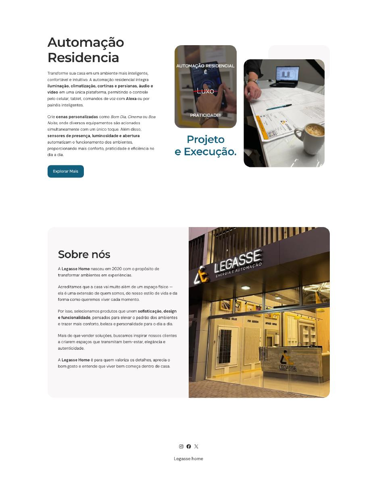

Rápido, tecnológico e pronto para ser encontrado — no Google e nas inteligências artificiais.
Gestão de Google Ads e Meta Ads, com estudo de ICP e persona do decisor de logística.
lp.dftlogistica.com.br — "Operador logístico dedicado para indústrias", lapidada semana a semana.
Campanha performando, com acompanhamento de qualidade de lead junto ao time comercial.
Antes de fechar um contrato dedicado, o diretor de logística pesquisa a empresa. É no site principal que ele decide se a DFT passa confiança — e hoje ele não está no mesmo nível da LP.
peso da home — o ideal é abaixo de 1,5 MB
só os 2 banners do topo, sem otimização
só para o servidor começar a responder
números de WhatsApp diferentes no site
Todo visitante vem de um anúncio pago. Se a página não carrega, ele volta para o Google — e clica no concorrente.
De 1s para 3s de carregamento
+32%
De 1s para 5s de carregamento
+90%
Fonte: Google / SOASTA Research, "Think with Google", 2017. Medições do site atual feitas pela Cardô em 25/11/2026.
Exemplo do objetivo
ChatGPT, Gemini e Perplexity recomendam empresas cujos sites são claros, estruturados e com dados concretos. O novo site já nasce preparado:
Schema de empresa, serviços, FAQ e áreas atendidas
As perguntas que o comprador faz, respondidas direto
Conteúdo específico por nicho e malha logística
Resumo da empresa pensado para leitura por IAs



Entregue pela Cardô em novembro/2026 · servidor responde em 0,22s (3x mais rápido que o site atual da DFT) · rastreamento completo de conversões (GTM, GA4, Google Ads).
Home · Sobre/História · Estrutura e Frota · Transporte · Armazenagem · Tecnologia · Segmentos · Malha Logística · Comercial/Contato · Trabalhe Aqui · Políticas · Blog
Fotos: acervo atual da DFT. Até 2 rodadas de revisão por etapa (texto e design).
Imersão, arquitetura do site e estratégia de conteúdo
Textos e aprovação
Design e aprovação
Desenvolvimento, integrações e rastreamento
Testes, ajustes finais e publicação
Validação da proposta
Contrato e 1ª parcela
Reunião de kick-off e início do projeto